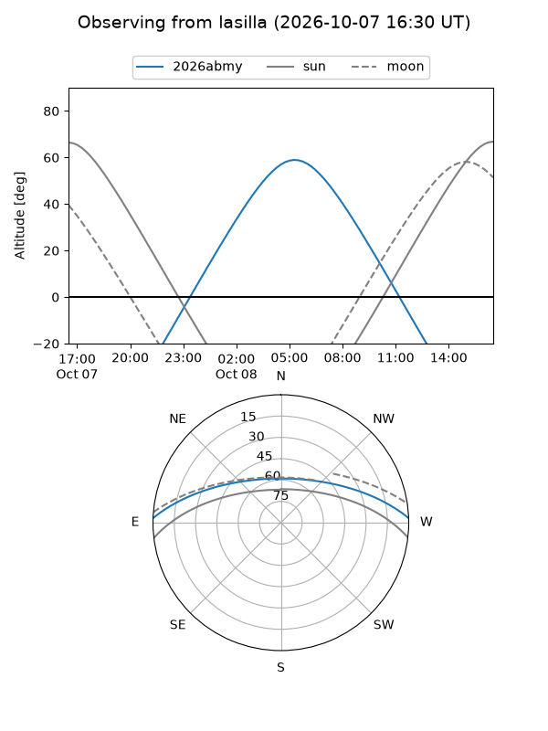
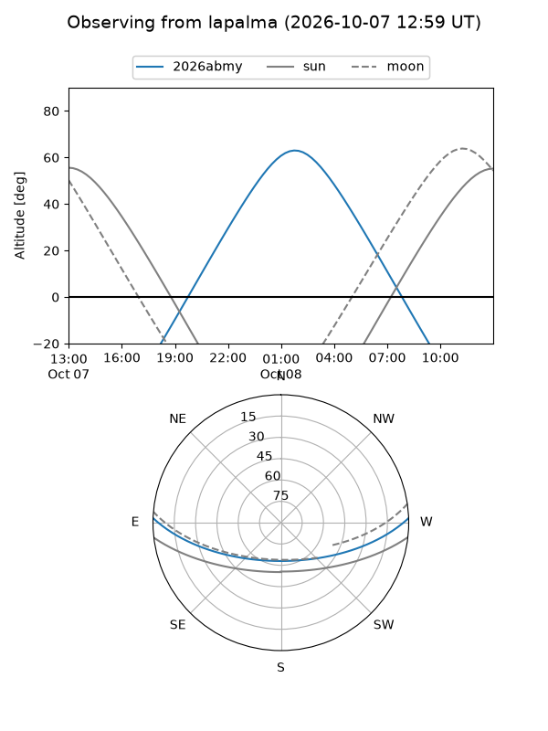
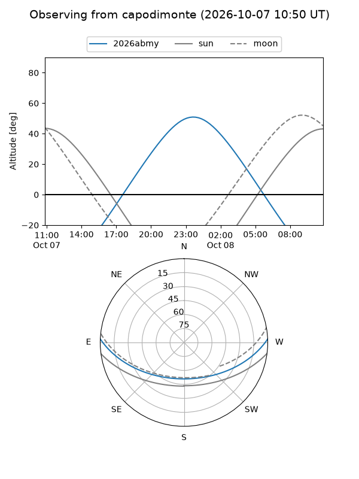
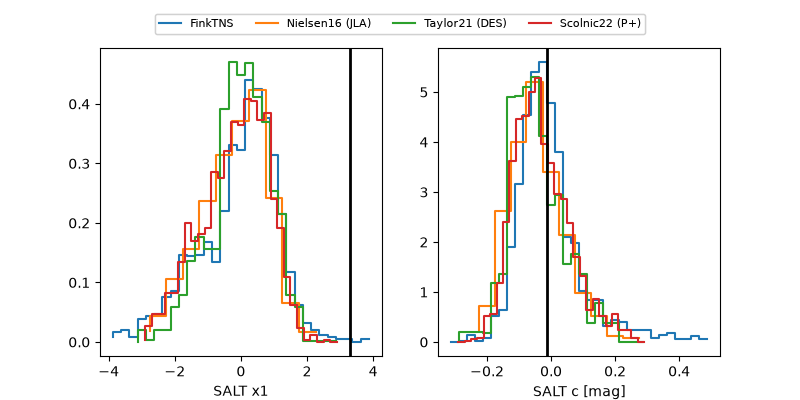

2026abmy
Target 2026abmy at 2026-10-08 03:08
Aliases and brokers:
FINK-ZTF: ztf.fink-portal.org/ZTF26abtlayz
Lasair-ZTF: lasair-ztf.lsst.ac.uk/objects/ZTF26abtlayz
ALeRCE-ZTF: alerce.online/object/ZTF26abtlayz
YSE-PZ: ziggy.ucolick.org/yse/transient_detail/2026abmy
TNS name: wis-tns.org/object/2026abmy
Direct TNS query: direct search
alt names
ZTF26abtlayz (ztf,fink_ztf)
2026abmy (tns,yse)
Coordinates:
equatorial (ra, dec) = 25.2260,+1.64856
equatorial (HMS+DMS) = 01:40:54.24,+01:38:54.81
galactic (l, b) = (147.3825,-58.85490)
Flags:
TNS type: nan
peak dt: +15.0
Photometry:
last ztfg=20.10, ztfr=20.08
6 ztfg, 3 ztfr detections
Lightcurve
Visibility



Additional plots
